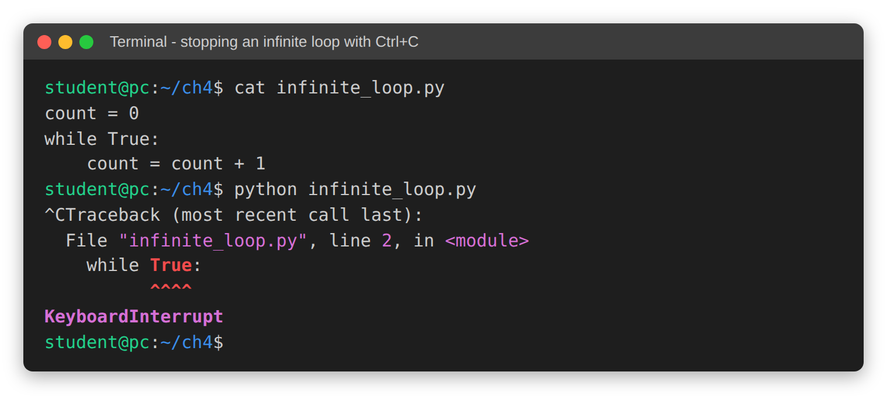
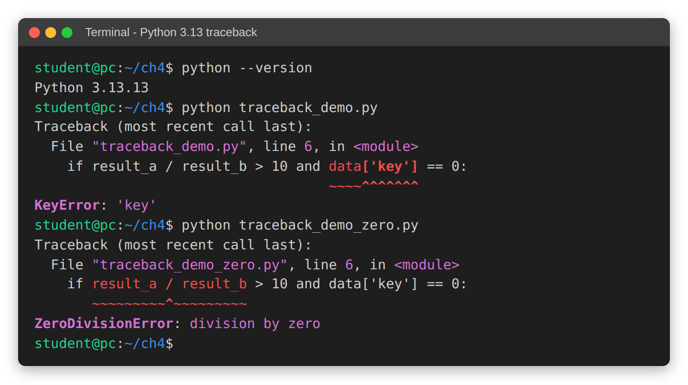

Chapter 4: Flow Control - Conceptual Questions and Answers¶
A Python script does not always run straight from the first line to the last. It can make choices, repeat work, skip steps and jump out of a task early. The rules that decide which line runs next are called flow control. They are the part of a program that turns a plain list of instructions into something that can think and react.
Chapter 4 of the book introduces the tools of flow control: if, elif and else, the match statement, while and for loops, range(), and the transfer statements break, continue, pass and return. This page goes deeper. It collects forty conceptual questions, grouped into four parts, and answers each one in detail. Most answers include a short script with its output, so you can see the idea at work and not just read about it. Some answers also have flowcharts, tables and follow-up questions.
The four parts build on each other:
- Part I looks at the basic idea of program flow and at "truthiness", the way Python decides whether a value counts as true or false.
- Part II covers decision-making:
if-elif-elsechains and the newermatch-casestatement. - Part III covers loops:
for,while,range(),break,continue,passand the loopelseclause. - Part IV moves to ideas used by working programmers, such as the iterator protocol, the walrus operator, dead code, and newer features added in Python 3.10 and 3.11.
Flow control is used in almost every Python program you will ever write or read. Whether you later work with files, data, web pages or games, these same few building blocks decide what your program does and when. Time spent here pays off in every later chapter.
Table of Contents¶
- Chapter 4: Flow Control - Conceptual Questions and Answers
- How to Use This Page
- Key Terms at a Glance
- I. Foundations of Program Flow: Sequence, Selection, Iteration and Truthiness
- Q1. The ATM Analogy: From Sequence to Loop
- Q2. Missing Exit Condition: The Infinite Loop
- Q3. Transfer Statements versus Selection and Iteration
- Q4. Selection as the Decision-Maker
- Q5. Sequential Flow as the Standard Path
- Q6. What Is Truthiness?
- Q7. Non-Zero Numbers Are True
- Q8. Negative Numbers versus None and Empty Lists
- Q9. Using Empty Containers to End a Loop
- Q10. The Risks of Relying on Truthiness
- II. Advanced Selection: Conditionals and Pattern Matching
- Q1. The Rule of One in if-elif-else
- Q2. Why the Order of elif Matters
- Q3. Indentation and the Dangling else Problem
- Q4. The else Block as a Catch-All
- Q5. One-Way Decision versus Binary Selection
- Q6. match-case versus if-elif Chains
- Q7. Guard Conditions in match-case
- Q8. The Wildcard _ in match-case
- Q9. The Risks of Deep Nesting
- Q10. Using and / or to Flatten the Teenager Check
- III. Iterative Logic and Loop Control Tools
- Q1. while Loops versus for Loops
- Q2. How range() Saves Memory
- Q3. The "Up To But Not Including" Rule
- Q4. The step Parameter of range()
- Q5. Simulating a do...until Loop
- Q6. break versus continue
- Q7. The pass Statement
- Q8. The else Clause on a Loop
- Q9. A Search Using for...else
- Q10. Nested for Loops and Each-to-Each Comparison
- IV. Beyond the Basics: Advanced Paradigms and Best Practices
- Q1. The Iterator Protocol
- Q2. The Walrus Operator in while Loops
- Q3. Dead Code and How Tools Find It
- Q4. EAFP versus LBYL
- Q5. Speed of for-range versus a while Counter
- Q6. Comparison Chaining and Maintainability
- Q7. Redundant else after Exhaustive Conditions
- Q8. isdigit() as a Validation Filter
- Q9. Fine-Grained Error Locations in Python 3.11
- Q10. ExceptionGroup and except* in Python 3.11
- Quick Revision Summary
How to Use This Page¶
- Read the question first and try to answer it in your own words before you read the answer.
- Type the scripts yourself and run them. Change the values and see what happens. This is the fastest way to learn.
- The scripts need Python 3.10 or later for
match-case, and Python 3.11 or later for the examples onExceptionGroup,except*and the improved error messages. Everything else works on any recent Python 3. - Words in the "Key Terms" table below are used again and again on this page. Come back to the table whenever a word is unclear. The links lead to fuller explanations for readers who want more detail.
Key Terms at a Glance¶
| Term | Meaning in simple words | Learn more |
|---|---|---|
| Flow control | The rules that decide which line of code runs next. | Python Tutorial: More Control Flow Tools |
| Sequential flow | Lines run one after another, top to bottom, each exactly once. | Wikipedia: Control flow |
| Selection | Choosing one path out of several (if, elif, else, match). |
The if statement |
| Iteration | Repeating a block of code (a loop: for or while). |
Wikipedia: Iteration |
| Boolean | A value that is either True or False. |
Boolean type |
| Boolean expression | Any expression that Python can judge as true or false, such as age > 18. |
Comparisons |
| Truthiness | Python's habit of treating any value as true or false when it is used as a condition. | Truth Value Testing |
| Infinite loop | A loop whose exit condition is never met, so it never stops on its own. | Wikipedia: Infinite loop |
| Transfer statement | A statement that sends the flow somewhere else at once: break, continue, return. |
break and continue |
| Pattern matching | Comparing a value against a list of shapes or values with match-case. |
PEP 636: Pattern Matching Tutorial |
| Iterable | Any object a for loop can walk through: a string, list, range, file and so on. |
Glossary: iterable |
| Iterator | The helper object that hands out the items of an iterable one by one. | Glossary: iterator |
| Exception | An error that happens while the program is running, such as ValueError. |
Errors and Exceptions |
| Traceback | The error report Python prints when an exception is not handled. | traceback module |
| Short-circuit evaluation | With and / or, Python stops checking as soon as the answer is known. |
Boolean operations |
I. Foundations of Program Flow: Sequence, Selection, Iteration and Truthiness¶
Every program, however large, is built from a few simple patterns: doing things in order, choosing between paths, and repeating work. This part looks at those patterns through the example of an ATM (cash machine). It then explains truthiness, the rule Python uses to decide whether a value counts as "true" or "false" in a condition.
The picture below shows the three building blocks of flow, plus the transfer statements that can change the flow midway.
flowchart TD
A1["1. Sequence: run lines one after another"] --> A2{"2. Selection: is the condition True?"}
A2 -- "Yes" --> A3["3. Run the if block"]
A2 -- "No" --> A4["4. Run the else block"]
A3 --> A5{"5. Iteration: repeat again?"}
A4 --> A5
A5 -- "Yes" --> A6["6. Run the loop body"]
A6 -- "7. break jumps straight out" --> A8
A6 --> A5
A5 -- "No" --> A8["8. Back to sequence: next line after the loop"]
Q1. The ATM Analogy: From Sequence to Loop¶
- How does the ATM analogy illustrate the transition from sequential execution to iterative flow, and why is this transition significant for program logic?
Answer
The ATM analogy shows that simple tasks, like inserting a card or entering a PIN, are sequential: each step happens once, in a fixed order. Counting out the cash is different. The machine does not know in advance how many notes it will need. So it keeps moving one note to the dispenser while the total counted is still less than the amount asked for. This is iterative flow.
In a purely sequential model, every step happens exactly once in a fixed order. That works for "insert card, enter PIN". It does not work for "count out the right number of notes", because the number of steps changes with every customer.
The move from sequence to iteration matters because it lets one small, reusable block of code handle any amount of data. Without a loop, a programmer would have to write a separate, hard-coded list of instructions for Rs 500, another for Rs 1,000, another for Rs 1,500, and so on. With a loop, the same three or four lines handle every withdrawal.
Steps the ATM follows
- Read the card and check the PIN (sequence).
- Ask for the amount (sequence).
- Set the "counted" total to 0.
- Check: is the counted total less than the amount asked for?
- If yes, move one note and add its value to the total. Go back to Step 4.
- If no, stop counting and hand over the cash (back to sequence).
flowchart TD
B1["1. Insert card and verify PIN"] --> B2["2. Enter requested amount"]
B2 --> B3["3. Set counted = 0"]
B3 --> B4{"4. Is counted less than requested?"}
B4 -- "Yes" --> B5["5. Move one note to dispenser"]
B5 --> B6["6. Add note value to counted"]
B6 --> B4
B4 -- "No" --> B7["7. Dispense cash"]
B7 --> B8["8. End of transaction"]
Script
# ATM note-counting: sequence first, then a loop
# Step 1 - Sequential part: each line runs once, top to bottom
print("Card inserted")
print("PIN verified")
# Step 2 - Set up the values the loop needs
requested = 2500 # amount the customer asked for
note_value = 500 # the ATM dispenses only 500-rupee notes
counted = 0 # nothing counted yet
notes = 0
# Step 3 - Iterative part: repeat while less than the requested sum is counted
while counted < requested:
counted = counted + note_value # move one note to the dispenser
notes = notes + 1
print(f"Note {notes} moved -> total counted = {counted}")
# Step 4 - Back to sequential flow once the loop ends
print(f"Please collect Rs {counted} ({notes} notes)")
print("Thank you")
Output
Card inserted
PIN verified
Note 1 moved -> total counted = 500
Note 2 moved -> total counted = 1000
Note 3 moved -> total counted = 1500
Note 4 moved -> total counted = 2000
Note 5 moved -> total counted = 2500
Please collect Rs 2500 (5 notes)
Thank you
Change requested to 1000 or 4500 and run it again. The loop code does not change at all, yet it handles the new amount. That is the whole point of iteration.
Follow-up question: What happens if the customer asks for Rs 2,300 and the machine has only 500-rupee notes?
Answer: The loop keeps going while counted < 2300. After four notes the total is 2000, which is still less, so it adds a fifth note and stops at 2500. The customer would get more than asked for. A real ATM prevents this by checking, before the loop starts, that the amount is a multiple of the note value (for example with if requested % note_value != 0:). This is a good example of selection and iteration working together.
Q2. Missing Exit Condition: The Infinite Loop¶
- What are the specific consequences if a programmer fails to define a clear exit condition within an iterative structure like an ATM's note-counting loop?
Answer
If a loop has no clear exit condition, or if its condition can never become false, the program enters an infinite loop. The loop repeats again and again because the stopping rule is never met.
In the ATM example, this could mean the machine keeps trying to dispense notes until it physically runs out of cash or the system crashes. That would cause serious logical and financial errors: wrong amounts paid out, a customer charged the wrong sum, and a machine out of service.
In an ordinary Python script, an infinite loop shows up in these ways:
- The program never finishes and appears to "hang" or freeze.
- One CPU core stays busy at or near 100 percent, so the computer may slow down or its fan may speed up.
- If the loop keeps adding items to a list, memory use keeps growing until the program crashes.
- If the loop prints something, the screen fills with the same lines over and over.
You then have to stop the program by hand. In a terminal or in IDLE, press Ctrl+C. Python stops the program and raises a KeyboardInterrupt. In Jupyter Notebook, use the "Interrupt the kernel" (stop) button.
The screenshot below shows this in a terminal. The file infinite_loop.py holds a loop with no way out. After it had run for a couple of seconds, Ctrl+C was pressed. The terminal shows ^C where the keys were pressed, and Python reports a KeyboardInterrupt along with the line it was running at that moment.

On Windows, the prompt at the start of each line looks different (for example C:\Users\student>), but the message from Python is the same.
Common causes of an infinite loop
| Cause | Example | Fix |
|---|---|---|
| The control variable is never updated | while counted < requested: with no counted = counted + ... line inside |
Update the variable inside the loop |
| The update moves the wrong way | x = 10 and while x > 0: x = x + 1 |
Make the update move towards the exit (x = x - 1) |
| The condition can never be false | while True: with no break inside |
Add an if ...: break |
continue skips the update line |
The x = x + 1 line comes after a continue |
Update the variable before continue (see Q6 in Part III) |
Script
The first loop below has the bug: the line that adds to counted is missing. A safety guard is added only so that this demo stops by itself. The second loop is the fixed version.
# A loop whose exit condition is never met, with a safety guard added
# so that this demo stops on its own.
# Step 1 - Set up
requested = 2500
counted = 0
rounds = 0
# Step 2 - The bug: we forgot to add the note value to 'counted'
while counted < requested:
rounds = rounds + 1
# counted = counted + 500 <-- the missing update line
# Step 3 - Safety guard (only for this demo)
if rounds == 5:
print("Stopped after 5 rounds. 'counted' is still", counted)
break
# Step 4 - The fixed version
counted = 0
while counted < requested:
counted = counted + 500 # the update line makes the condition change
print("Fixed loop ended. counted =", counted)
Output
Stopped after 5 rounds. 'counted' is still 0
Fixed loop ended. counted = 2500
Follow-up question: Is every infinite loop a mistake?
Answer: No. Some programs are meant to run forever: a web server waiting for visitors, a game waiting for key presses, or the ATM's main menu waiting for the next customer. These use while True: on purpose. The difference is that they always have a planned way out, such as a break when the user chooses "Exit", or a shutdown command. An infinite loop is a bug only when nobody planned it.
Q3. Transfer Statements versus Selection and Iteration¶
- In the "Three Building Blocks of Flow," how do Transfer Statements differ from Selection and Iteration in terms of their impact on the script's path?
Answer
Selection creates branches and iteration creates cycles. Transfer statements such as break, continue and return are different: they act as redirects. They change the planned flow in the middle of a block.
- Selection decides which path to take at a fork in the road.
- Iteration decides how many times to walk a path.
- Transfer statements let the program jump out of a loop, skip the rest of one round, or leave a function early, as soon as some condition is met.
This gives the programmer fine control. You can handle a special case, or take a shortcut once the answer is found, without waiting for the loop to reach its natural end. For example, once a search has found what it was looking for, there is no need to check the remaining items.
| Statement | Where it is used | What it does | Everyday picture |
|---|---|---|---|
break |
Inside a loop | Ends the whole loop at once; flow goes to the first line after the loop | Leaving a queue and going home |
continue |
Inside a loop | Ends only the current round; flow goes back to the top of the loop | Skipping one song on a playlist |
return |
Inside a function | Ends the function (and any loop inside it) and sends a value back | Handing in your answer sheet early |
Note that pass is often listed with these, but it is not a transfer statement. It does nothing and does not change the flow at all (see Q7 in Part III).
Script
# break, continue and return side by side
# Step 1 - continue: skip one round, keep looping
print("continue demo:")
for n in range(1, 6):
if n == 3:
continue # skip 3, go back to the top of the loop
print(" ", n)
# Step 2 - break: leave the loop completely
print("break demo:")
for n in range(1, 6):
if n == 3:
break # stop the whole loop at 3
print(" ", n)
# Step 3 - return: leave the function (and its loop) at once
def first_even(numbers):
for n in numbers:
if n % 2 == 0:
return n # found it, exit the function right here
return None # runs only if no even number was found
print("return demo:", first_even([7, 9, 4, 6]))
Output
continue demo:
1
2
4
5
break demo:
1
2
return demo: 4
Notice that first_even() returned 4 and never even looked at 6. The return statement ended the loop and the function in one step.
Q4. Selection as the Decision-Maker¶
- Why is the "Selection" building block considered the primary mechanism for decision-making within a Python script?
Answer
Selection, written mainly with if, elif and else, is the main way a program makes decisions. It works by testing a Boolean expression, a question whose answer is True or False, and then choosing the direction of the program based on that answer.
This lets a script look at the current situation and react to it. For example, an ATM checks whether the customer has enough money. If not, it takes the error path and shows "Insufficient Funds". If yes, it takes the success path and dispenses the cash.
Without selection, a program would always follow the same fixed path, whatever the input. It would do exactly the same thing for a customer with Rs 10 in the bank and a customer with Rs 10 lakh. Such a program could not validate input, handle errors, or respond to what the user does. It would be of little use for any real task that involves logic or conditions.
Steps in a selection
- Python evaluates the condition (for example
amount > balance). - The result is either
TrueorFalse. - If
True, Python runs the indented block underif. - If
False, Python skips that block and runs theelseblock, if there is one. - After either block, both paths meet again and the program continues.
flowchart TD
C1["1. Customer asks for an amount"] --> C2{"2. Is amount greater than balance?"}
C2 -- "Yes" --> C3["3. Show Insufficient Funds"]
C2 -- "No" --> C4["4. Dispense cash"]
C4 --> C5["5. Reduce balance"]
C3 --> C6["6. Both paths meet: print receipt"]
C5 --> C6
Script
# Selection: the same code takes different paths for different data
def withdraw(balance, amount):
# Step 1 - Test the condition
if amount > balance:
# Step 2a - Error path
print(f"Asked {amount}, balance {balance}: Insufficient Funds")
else:
# Step 2b - Success path
balance = balance - amount
print(f"Asked {amount}: dispensed. New balance {balance}")
# Step 3 - Both paths meet here again
return balance
withdraw(1000, 1500)
withdraw(1000, 400)
Output
Asked 1500, balance 1000: Insufficient Funds
Asked 400: dispensed. New balance 600
The same function, with the same code, gave two different results because the data was different. That is what "decision-making" means in a program.
Q5. Sequential Flow as the Standard Path¶
- How does sequential flow serve as the "Standard Path" for Python execution, and what role does it play when selection or iteration concludes?
Answer
Sequential flow is the natural, top-to-bottom way Python runs code. One line must finish completely before the next one begins, just like working through a simple to-do list.
It is the default or "standard path". Selection and iteration are detours from it, used when the task needs a decision or a repetition. When a detour ends, the program returns to the standard path:
- When an
if/elif/elseblock finishes, Python goes to the first line after the whole selection structure. - When a loop's condition becomes false (or a
breakruns), Python goes to the first line after the loop.
How does Python know where "after the structure" is? By indentation. The first line that is not indented under the if or the loop is where the sequence resumes. The main story of the script then carries on from there.
Script
# Flow returns to the sequence after a selection and a loop
print("Line A - start") # Step 1 - sequence
x = 7
if x > 5: # Step 2 - selection
print("Line B - inside the if block")
for i in range(2): # Step 3 - iteration
print("Line C - loop round", i)
print("Line D - first unindented line after the loop") # Step 4 - back to sequence
Output
Line A - start
Line B - inside the if block
Line C - loop round 0
Line C - loop round 1
Line D - first unindented line after the loop
Follow-up question: If x were 3 instead of 7, which lines would be printed?
Answer: Line A, then Line C twice, then Line D. Line B is skipped because 3 > 5 is False, but the sequence still continues from the next unindented line.
Q6. What Is Truthiness?¶
- Explain the concept of "Truthiness" in Python and how it differs from a strict Boolean evaluation of True and False.
Answer
In a strict Boolean system, a condition must be exactly True or False. Python is more flexible. When you use any value as a condition (after if, while, and, or or not), Python decides whether that value counts as true ("truthy") or false ("falsy"). This decision depends on the content of the value, not on its type. This idea is called truthiness.
The rule is easy to remember: empty or zero means False; everything else means True.
Some languages, such as Java, accept only real Boolean values in a condition. Writing if (name) for a string is an error there; you must write something like if (!name.isEmpty()). Python lets you simply write if name:.
The falsy values
These are the values that Python treats as False. Almost every other value is truthy.
| Group | Falsy values |
|---|---|
| The constants | False, None |
| Zero of any number type | 0, 0.0, 0j |
| Empty sequences and collections | "" (empty string), [], (), {}, set(), range(0) |
You can check any value with the built-in bool() function. The full rules are in the Python docs under Truth Value Testing.
Truthiness makes code short and easy to read. For example, while s1: keeps running as long as the string s1 has characters in it. It stops by itself the moment the string becomes empty.
Script
# Truthiness: what bool() says about different values
# Step 1 - A mix of values to test
values = [True, False, 0, 1, -10, 0.0, 3.5, "", "hi", " ", [], [0], (), {}, None]
# Step 2 - Print each value and its truth value
for v in values:
print(f"{v!r:>6} -> {bool(v)}")
# Step 3 - Using truthiness directly in a loop
s1 = "abcdef"
while s1: # runs while s1 is not empty
print("s1 =", repr(s1))
s1 = s1[2:] # drop the first two characters
print("Loop ended because s1 is now", repr(s1))
Output
True -> True
False -> False
0 -> False
1 -> True
-10 -> True
0.0 -> False
3.5 -> True
'' -> False
'hi' -> True
' ' -> True
[] -> False
[0] -> True
() -> False
{} -> False
None -> False
s1 = 'abcdef'
s1 = 'cdef'
s1 = 'ef'
Loop ended because s1 is now ''
Two results are worth a second look. The string ' ' (a single space) is truthy, because it is not empty: it contains one character. The list [0] is also truthy, because the list holds one item, even though that item is zero.
Q7. Non-Zero Numbers Are True¶
- How does Python's treatment of non-zero numbers as True simplify the logic of conditional branching compared to more restrictive languages?
Answer
Python treats every non-zero number as True. This includes negative numbers like -10 and small decimals like 0.001. Only zero (0, 0.0) counts as False.
Because of this, you can use a numeric variable directly as a condition. In a stricter language such as Java, you must write a full comparison like if (x != 0). In Python, if x: is enough.
This cuts down on extra code (often called "boilerplate") and makes the programmer's intention clear. It is especially handy when a variable stands for a count or an amount, where "zero" naturally means "nothing there". For example:
items_in_cart = 3
if items_in_cart:
print("Proceed to checkout")
reads almost like plain English: "if there are items in the cart, proceed".
Script
# Non-zero numbers are True, zero is False
for x in [5, -10, 0, 0.0, 0.001]:
# Step 1 - Short form (Pythonic)
short = "runs" if x else "skipped"
# Step 2 - Long form (explicit comparison) gives the same answer
long = "runs" if x != 0 else "skipped"
print(f"x = {x:>6}: 'if x:' {short:7} | 'if x != 0:' {long}")
Output
x = 5: 'if x:' runs | 'if x != 0:' runs
x = -10: 'if x:' runs | 'if x != 0:' runs
x = 0: 'if x:' skipped | 'if x != 0:' skipped
x = 0.0: 'if x:' skipped | 'if x != 0:' skipped
x = 0.001: 'if x:' runs | 'if x != 0:' runs
Both forms always agree. The short form is simply less to type and less to read.
Follow-up question: When should you still write the full comparison x != 0?
Answer: When zero is a normal, valid value and you are really asking a different question. For example, if you want to know whether a temperature has been recorded at all, if temp: would wrongly treat a reading of 0 degrees as "no reading". In that case, write if temp is not None:. Q10 below looks at this trap in more detail.
Q8. Negative Numbers versus None and Empty Lists¶
- Contrast the Boolean evaluation of a negative number with the evaluation of None and an empty list [] in a Python flow control context.
Answer
In Python, a negative number is truthy because it is not zero. So a block under if -5: will run.
None and an empty list [] are falsy. None means "no value at all", and [] means "a container with nothing in it". Both make the flow skip the if block, or move to the else block if there is one.
This difference is very useful when processing data. It lets a script tell apart:
- a variable that holds a real measurement, even a negative one such as
-5degrees, and - a variable that is empty or was never given a value.
| Value | What it usually means | Truthy or falsy? | Does if value: run? |
|---|---|---|---|
-5 |
A real reading below zero | Truthy | Yes |
12 |
A real reading above zero | Truthy | Yes |
0 |
A real reading of exactly zero | Falsy | No (be careful, see Q10) |
None |
No reading was taken | Falsy | No |
[] |
A list of readings that is empty | Falsy | No |
Script
# A valid negative reading versus missing data
readings = [-5, None, [], 12]
for r in readings:
# Step 1 - Truthiness test
if r:
print(f"{r!r:>5}: truthy -> process it")
else:
print(f"{r!r:>5}: falsy -> skip it")
Output
-5: truthy -> process it
None: falsy -> skip it
[]: falsy -> skip it
12: truthy -> process it
Q9. Using Empty Containers to End a Loop¶
- Analyze why the "Truthiness" of empty containers is a "Pythonic" way to handle loop termination, using the example of string slicing.
Answer
The word "Pythonic" means "written in the natural style that experienced Python programmers prefer". One such style is to let the container itself control the loop.
Take the loop while s1:. Inside it, the statement s1 = s1[2:] removes the first two characters each time round. (The slice s1[2:] means "from index 2 to the end".) Sooner or later the string becomes empty, "". Python treats an empty string as False, so the loop ends cleanly and on its own.
Steps
- Python checks
s1. It is not empty, so it counts asTrueand the loop body runs. - The body prints or uses
s1. s1 = s1[2:]makes the string two characters shorter.- Back to Step 1. When
s1finally becomes"", it counts asFalseand the loop stops.
Trace table for s1 = "abcdef"
| Round | s1 at the check |
Truthy? | s1 after s1 = s1[2:] |
|---|---|---|---|
| 1 | 'abcdef' |
Yes | 'cdef' |
| 2 | 'cdef' |
Yes | 'ef' |
| 3 | 'ef' |
Yes | '' |
| 4 | '' |
No, loop ends | - |
The output of this loop is shown in the script in Q6 above.
This style is preferred over writing while len(s1) > 0: because it is shorter and lets the data speak for itself. Python's official style guide, PEP 8, recommends it too: for sequences, use the fact that empty sequences are false (if not seq:) instead of if len(seq) == 0:.
What if the string has an odd number of characters, like "abcde"? Slicing past the end of a string does not cause an error in Python. "e"[2:] simply gives "", so the loop still ends safely.
Q10. The Risks of Relying on Truthiness¶
- What are the potential risks of relying on Python's flexible truthiness if a developer is not careful with variable initialization?
Answer
Truthiness is convenient, but it can cause code to run when it should not, or to be skipped when it should run. This happens when what looks empty to a person is not empty to Python, or the other way round. There are two common traps.
Trap 1: a value that looks empty but is truthy. A string that contains only a space, " ", looks blank on screen. But a space is still a character, so the string is not empty and counts as True. A loop or if that depends on it may run when it should have stopped. The fix is to clean the value first, for example with .strip(), which removes spaces from both ends.
Trap 2: a real value that is falsy. The number 0 is a perfectly valid value, such as a test score of zero or a temperature of 0 degrees. But if score: treats it as False, exactly as if the score were missing. The fix is to test for "missing" directly with is None.
To avoid such silent logical errors, make sure the value you test really represents the state you mean:
- Use
None(not0or"") to mean "no data yet". - Test for missing data with
if value is None:rather thanif not value:. - Clean text input with
.strip()before testing it.
Script
# Two traps with truthiness
# Trap 1 - a string holding only a space looks empty but is truthy
name = " "
if name:
print("Trap 1: name looks filled in:", repr(name))
if name.strip(): # strip() removes spaces first
print("never printed")
else:
print("Trap 1 fixed with strip(): name is really blank")
# Trap 2 - a real value of 0 is falsy
score = 0 # the student really scored 0
if not score:
print("Trap 2: 'if not score' wrongly says score is missing")
if score is None:
print("never printed")
else:
print("Trap 2 fixed with 'is None': score is present and equals", score)
Output
Trap 1: name looks filled in: ' '
Trap 1 fixed with strip(): name is really blank
Trap 2: 'if not score' wrongly says score is missing
Trap 2 fixed with 'is None': score is present and equals 0
Follow-up question: Why do we write score is None and not score == None?
Answer: There is only ever one None object in a running Python program, so is (which checks "is this the very same object?") is the correct and safest test. PEP 8 recommends is None and is not None.
With the basic building blocks and truthiness in place, the next part looks at decision-making in more depth: long if-elif chains and the newer match-case statement.
II. Advanced Selection: Conditionals and Pattern Matching¶
Python's tools for making choices have grown over time, from the basic if statement to the newer match-case statement added in Python 3.10. Each step has aimed at the same goal: handling more complex decisions while keeping the code clear. Used well, these tools let you build decision logic that runs efficiently and is easy for people to read and maintain.
Q1. The Rule of One in if-elif-else¶
- Explain the "Rule of One" in Python's if-elif-else structure and its impact on performance and logic.
Answer
The "Rule of One" says that in a chain of if-elif-else statements, only one block ever runs: the first one whose condition is True. As soon as Python finds it, it runs that block and skips every block below it, without even testing their conditions.
This has two effects.
- Performance: Python stops testing as soon as it finds a match. The remaining conditions are never evaluated, so no time is wasted on them.
- Logic: The branches are mutually exclusive, meaning at most one of them can happen. Even if several conditions could be true at the same time, the program follows only one path: the first one in the order written.
Steps Python follows
- Test the
ifcondition. If it isTrue, run its block and jump to Step 4. - Otherwise, test each
elifcondition in turn, top to bottom. Run the first one that isTrue, then jump to Step 4. - If none was
True, run theelseblock (if there is one). - Continue with the first line after the whole chain.
flowchart TD
D1{"1. if n greater than 0?"} -- "True" --> D2["2. Run Branch 1"]
D1 -- "False" --> D3{"3. elif n greater than -5?"}
D3 -- "True" --> D4["4. Run Branch 2"]
D3 -- "False" --> D5{"5. elif n is even?"}
D5 -- "True" --> D6["6. Run Branch 3"]
D5 -- "False" --> D7["7. else: Run Branch 4"]
D2 --> D8["8. Continue after the chain"]
D4 --> D8
D6 --> D8
D7 --> D8
Script
# Rule of One: only the first True branch runs
def check(n):
print(f"n = {n}")
# Step 1 - Python tests the conditions from top to bottom
if n > 0:
print(" Branch 1: positive")
elif n > -5:
print(" Branch 2: between -5 and 0")
elif n % 2 == 0:
print(" Branch 3: even")
else:
print(" Branch 4: everything else")
# Step 2 - Only one branch has run; flow continues here
check(8) # 8 is positive AND even, but only Branch 1 runs
check(-2) # -2 fits Branch 2 and Branch 3; only Branch 2 runs
check(-8)
check(-7)
Output
n = 8
Branch 1: positive
n = -2
Branch 2: between -5 and 0
n = -8
Branch 3: even
n = -7
Branch 4: everything else
Follow-up question: What would change if all four tests were written as separate if statements, with no elif?
Answer: Each if would then be tested on its own, and more than one block could run. For n = 8, both "positive" and "even" would be printed. Use an elif chain when you want exactly one outcome; use separate if statements when several outcomes may apply together.
Q2. Why the Order of elif Matters¶
- Evaluate why the order of elif statements is critical for logic, particularly when dealing with numerical ranges or overlapping conditions.
Answer
Python tests elif conditions one by one, from top to bottom, and the first match wins. So a broad condition placed early can "hide" (or shadow) a narrower condition placed later.
For example, suppose a script checks if score > 50: before elif score > 90:. A student who scores 95 meets the first condition (95 is more than 50). That block runs and prints "Pass". The "A Grade" block is never reached, so no student can ever get an A.
To avoid this, arrange overlapping conditions from the most specific (or highest value) to the most general.
Steps to order conditions correctly
- List all the ranges or cases you need.
- Ask: "Is one case completely inside another?" For example, every score above 90 is also above 50.
- Put the narrower case (above 90) first.
- Put the wider case (above 50) after it.
- Finish with
elsefor everything that is left.
Script
# Wrong order vs right order of elif
score = 95
# Step 1 - Wrong order: the general test comes first
if score > 50:
print("Wrong order:", "Pass")
elif score > 90:
print("Wrong order:", "A Grade") # can never run for scores above 90
# Step 2 - Right order: the most specific (highest) test comes first
if score > 90:
print("Right order:", "A Grade")
elif score > 50:
print("Right order:", "Pass")
else:
print("Right order:", "Fail")
Output
Wrong order: Pass
Right order: A Grade
| Score | Wrong order gives | Right order gives |
|---|---|---|
| 95 | Pass | A Grade |
| 70 | Pass | Pass |
| 30 | (nothing printed) | Fail |
Q3. Indentation and the Dangling else Problem¶
- Describe how Python's use of indentation as syntax prevents the "dangling else" problem found in C-style languages.
Answer
In C, Java and similar languages, an else placed after two nested if statements can be ambiguous. Which if does it belong to? The language rule is that it attaches to the nearest if, even if the programmer's indentation suggests otherwise. If the programmer meant something else and did not add braces {}, the program behaves wrongly. This is known as the dangling else problem.
Python removes the problem completely because indentation is part of the syntax. The else belongs to the if it is lined up with, and nothing else. This forces the programmer to show the structure of the logic clearly. What the code looks like is exactly how it runs, which greatly reduces mistakes in nested conditions.
Here is the problem in C. The indentation suggests the else belongs to the outer if, but C attaches it to the inner one:
/* C code: misleading indentation */
if (a > 0)
if (b > 0)
printf("both positive");
else /* actually belongs to if (b > 0) */
printf("a is not positive");
In Python, you choose the meaning by where you place else.
Script
# The position of 'else' decides which 'if' it belongs to
a, b = 5, -1
# Version 1 - else lined up with the INNER if
if a > 0:
if b > 0:
print("V1: both positive")
else:
print("V1: a positive, b not positive")
# Version 2 - else lined up with the OUTER if
if a > 0:
if b > 0:
print("V2: both positive")
else:
print("V2: a is not positive")
print("V2 printed nothing above, because a > 0 and b is not > 0")
Output
V1: a positive, b not positive
V2 printed nothing above, because a > 0 and b is not > 0
The only difference between the two versions is the position of else, yet they behave differently. In Python, there is never any doubt about which if an else belongs to.
Q4. The else Block as a Catch-All¶
- What is the function of the else block as a "Catch-All," and why does it lack a Boolean expression?
Answer
The else block is a safety net. It handles every case that was not covered by the if and elif conditions above it.
It has no condition of its own because it does not need one. Its rule is simply: "run me if everything above me was False". Writing a condition for it would be pointless, since reaching else already tells us that all earlier tests failed.
This makes else the right place for fallback behaviour and error messages. It makes sure the program always has a defined path, even when the input is something the programmer did not expect.
Script
# else as the catch-all
for choice in ["1", "2", "9"]:
# Step 1 - Test the known options
if choice == "1":
print(choice, "-> Check balance")
elif choice == "2":
print(choice, "-> Withdraw cash")
# Step 2 - Anything else lands here (no condition needed)
else:
print(choice, "-> Invalid option, try again")
Output
1 -> Check balance
2 -> Withdraw cash
9 -> Invalid option, try again
Follow-up question: Is it a syntax error to write else x > 5:?
Answer: Yes. Python will report a SyntaxError. If you need another condition, use elif x > 5: instead.
Q5. One-Way Decision versus Binary Selection¶
- How does the "One-Way" decision (omitting the else clause) differ from the "Binary Selection" model in practical application?
Answer
A one-way decision is an if with no else. It is used when an action is needed only when a condition is True, and nothing special should happen otherwise. For example, an air conditioner switches on only when temp > 25. If the temperature is lower, the program just carries on.
Binary selection is the if-else form. It is used when there are always exactly two possible outcomes and one of them must happen. For example, a whole number is either "Even" or "Odd", never both and never neither.
The one-way if is simpler and a natural fit for monitoring systems, where the normal state is "keep going" and action is needed only now and then. Adding an empty or pointless else there would only add clutter.
| Feature | One-way (if only) |
Binary (if-else) |
|---|---|---|
| Number of outcomes | Action or no action | Always one of two actions |
When condition is False |
Nothing special happens | The else block runs |
| Typical use | Alerts, warnings, switching a device on | Even/odd, pass/fail, yes/no |
Script
# One-way decision vs binary selection
# Step 1 - One-way: act only when the condition is True
for temp in [22, 31]:
print(f"Temperature {temp}")
if temp > 25:
print(" AC switched ON")
print(" Monitoring continues") # runs every time
# Step 2 - Binary: exactly one of two outcomes
for n in [4, 7]:
if n % 2 == 0:
print(n, "is Even")
else:
print(n, "is Odd")
Output
Temperature 22
Monitoring continues
Temperature 31
AC switched ON
Monitoring continues
4 is Even
7 is Odd
Q6. match-case versus if-elif Chains¶
- Compare the efficiency and readability of match-case statements (Python 3.10+) against traditional if-elif chains for menu-driven applications.
Answer
The match-case statement, officially called structural pattern matching, was added in Python 3.10. For menu-driven programs it is often cleaner than a long if-elif chain.
Readability. In an if-elif chain you repeat the variable name in every test: if choice == "1", elif choice == "2", and so on. With match, you write the variable (the subject) once, and then simply list the possible values (the patterns). The code reads like a menu. You can also group several values in one case with |, meaning "or", as in case "3" | "4":.
Efficiency. For simple menus, match-case is not noticeably faster than an if-elif chain. Python still checks the cases one by one, from top to bottom, and stops at the first match, just like elif. So the choice between them should be made on clarity, not speed.
Where match really shines is in matching the structure of data, not just single values. For example, case (x, y): can check that a value is a pair and unpack it into two variables in one step. This is hard to write neatly with if statements. The Pattern Matching Tutorial (PEP 636) has many such examples.
| Point | if-elif-else |
match-case |
|---|---|---|
| Python version | All versions | 3.10 and later |
| Subject written | In every condition | Once, after match |
| Several values in one branch | choice == "3" or choice == "4" |
case "3" \| "4": |
| Catch-all | else: |
case _: |
| Speed for simple menus | About the same | About the same |
| Can test any Boolean condition | Yes, directly | Only through a guard (case x if ...) |
| Can unpack structures (lists, tuples, objects) | No, needs extra code | Yes |
Script
# The same menu written two ways (match needs Python 3.10 or later)
def menu_if(choice):
if choice == "1":
return "Check balance"
elif choice == "2":
return "Withdraw cash"
elif choice == "3" or choice == "4":
return "Deposit"
else:
return "Invalid option"
def menu_match(choice):
match choice: # Step 1 - the subject is written once
case "1": # Step 2 - each case is a pattern
return "Check balance"
case "2":
return "Withdraw cash"
case "3" | "4": # Step 3 - '|' means "either of these"
return "Deposit"
case _: # Step 4 - wildcard catches everything else
return "Invalid option"
for c in ["1", "2", "4", "x"]:
print(f"{c}: if-elif -> {menu_if(c):14} | match -> {menu_match(c)}")
Output
1: if-elif -> Check balance | match -> Check balance
2: if-elif -> Withdraw cash | match -> Withdraw cash
4: if-elif -> Deposit | match -> Deposit
x: if-elif -> Invalid option | match -> Invalid option
Both functions always give the same answer. The match version is simply easier to scan.
Q7. Guard Conditions in match-case¶
- Evaluate the "Guard" condition (using if inside a case) and its impact on the flexibility of structural pattern matching.
Answer
A guard is an extra if test written at the end of a case line. The case is chosen only if the pattern matches and the guard is True. If the guard is False, Python moves on to try the next case.
For example, in case char if char.isalpha():, the pattern char is a capture pattern. A capture pattern matches any value and stores it in the variable char. The guard if char.isalpha() then filters it, so this case is used only when the value is a letter.
Guards give match great flexibility. One match statement can handle simple value checks and more complex tests side by side, such as checking that a string is a single character with len(char) == 1.
Steps Python follows for each case
- Try the pattern. If it does not match, go to the next case.
- If it matches, store any captured values in their variables.
- Test the guard. If
True, run this case's block and finish. - If the guard is
False, go on to the next case.
Script
# Guards: an extra 'if' check on a case
def classify(char):
match char:
# Step 1 - capture the value in 'c', then apply the guard
case c if len(c) != 1:
return "not a single character"
case c if c.isalpha():
return "a letter"
case c if c.isdigit():
return "a digit"
# Step 2 - wildcard for everything that got past the guards
case _:
return "a symbol or space"
for item in ["A", "7", "#", "AB", ""]:
print(f"{item!r:5} -> {classify(item)}")
Output
'A' -> a letter
'7' -> a digit
'#' -> a symbol or space
'AB' -> not a single character
'' -> not a single character
Follow-up question: What happens if you write a bare capture pattern, such as case c: with no guard, and then add more cases after it?
Answer: Python refuses to run the program. A bare capture pattern matches everything, so every case after it could never be reached. Python reports this before running:
SyntaxError: name capture 'c' makes remaining patterns unreachable
A guard fixes this because it can fail and let Python move on to the next case.
Q8. The Wildcard _ in match-case¶
- Explain the role of the Wildcard _ in a match-case statement and how it mirrors the else block in an if structure.
Answer
In a match statement, the underscore _ is the wildcard pattern. It matches absolutely anything and, unlike a capture pattern, does not store the value in a variable. It does the same job as else in an if chain: it is the catch-all.
If none of the earlier cases matches, the case _: block runs. This makes sure unexpected input is handled. It is good practice to include a wildcard case in menu-driven programs, so the user gets a helpful message when they press a wrong key or choose an invalid option.
Note what happens without a wildcard: if nothing matches, Python raises no error. The match statement simply does nothing, and the program carries on silently. The user may be left wondering why nothing happened.
Script
# What happens with and without the wildcard
def no_wildcard(key):
match key:
case "q":
print(key, "-> Quit")
case "h":
print(key, "-> Help")
print(" (end of no_wildcard)")
def with_wildcard(key):
match key:
case "q":
print(key, "-> Quit")
case "h":
print(key, "-> Help")
case _:
print(key, "-> Unknown key, press h for help")
no_wildcard("z") # nothing matches, nothing is printed by match
with_wildcard("z")
Output
(end of no_wildcard)
z -> Unknown key, press h for help
The wildcard case must be the last case. Like case c: in Q7, it matches everything, so any case placed after it could never run.
Q9. The Risks of Deep Nesting¶
- What are the risks associated with "Deep Nesting" of conditionals, and what is the primary "Rule of Thumb" to avoid it?
Answer
Deep nesting happens when if-else blocks are placed inside one another, several levels deep. Each level pushes the code further to the right. The result is code that "drifts" across the screen and is hard to follow. To understand a line deep inside, the reader must remember every condition above it. Mistakes become easy to make and hard to spot.
The main rule of thumb is: if the code has become hard to read because of too much indentation, restructure it. Common ways to do this are:
- Use
elifinstead of anifinside anelse. - Combine conditions with logical operators such as
andandor(see Q10). - Inside a function, handle each problem case first and
returnearly. This is often called a guard clause. The main work then sits at the bottom, with no extra indentation.
These changes "flatten" the structure. The conditions become peers (equals, side by side) rather than parent and child, which makes the design much easier to read and maintain.
Script
# Deep nesting vs a flat version (same logic)
def can_withdraw_nested(card_ok, pin_ok, balance, amount):
if card_ok:
if pin_ok:
if amount <= balance:
return "Cash dispensed"
else:
return "Insufficient funds"
else:
return "Wrong PIN"
else:
return "Card rejected"
def can_withdraw_flat(card_ok, pin_ok, balance, amount):
# Each problem is handled first and the function returns at once
if not card_ok:
return "Card rejected"
if not pin_ok:
return "Wrong PIN"
if amount > balance:
return "Insufficient funds"
return "Cash dispensed"
tests = [(True, True, 1000, 500), (True, False, 1000, 500),
(False, True, 1000, 500), (True, True, 100, 500)]
for t in tests:
print(can_withdraw_nested(*t), "|", can_withdraw_flat(*t))
(The *t in the last line unpacks the tuple t into four separate arguments.)
Output
Cash dispensed | Cash dispensed
Wrong PIN | Wrong PIN
Card rejected | Card rejected
Insufficient funds | Insufficient funds
Both functions give identical results, but the flat version has no line indented more than one level inside the function, and each check can be read on its own.
Q10. Using and / or to Flatten the Teenager Check¶
- How do Logical Operators like and and or help in refactoring nested "Teenager" logic into a single line?
Answer
Logical operators let you join several conditions into one expression. For a teenager check, you need a lower limit (older than 12) and an upper limit (younger than 20). With and, both fit in one line: if age > 12 and age < 20:.
This replaces a nested version, where one if sits inside another. The indentation drops by a level and the "teenager" rule is clear at a glance.
Python goes one step further with comparison chaining: you can write if 12 < age < 20:. This reads just like the maths notation you learnt at school. It means exactly the same as 12 < age and age < 20, with the small bonus that age is evaluated only once (see Q6 in Part IV).
Script
# Three ways to write the same "teenager" test
age = 15
# Step 1 - Nested version
if age > 12:
if age < 20:
print("Nested: teenager")
# Step 2 - Using 'and'
if age > 12 and age < 20:
print("With and: teenager")
# Step 3 - Comparison chaining
if 12 < age < 20:
print("Chained: teenager")
Output
Nested: teenager
With and: teenager
Chained: teenager
Follow-up question: How would you use or to check that someone is not a teenager?
Answer: if age <= 12 or age >= 20:. Only one side needs to be true. You could also write if not (12 < age < 20):.
While decision-making structures allow for branching paths, iterative logic provides the engine for repetitive tasks, allowing scripts to process large amounts of data through loops.
III. Iterative Logic and Loop Control Tools¶
Some tasks must be repeated a known number of times, like printing the numbers 1 to 10. Others must go on until something happens, like asking for a password until the right one is typed. The first kind is called definite iteration and the second indefinite iteration. Knowing which one you face, and so choosing between a for loop and a while loop, is one of the most important design decisions in a program.
Q1. while Loops versus for Loops¶
- Synthesize the primary differences between while and for loops in terms of iteration type and control mechanism.
Answer
A for loop performs definite iteration. It runs once for each item in a collection, such as a string, a list or a range(). The number of rounds is set by the size of the collection.
A while loop performs indefinite iteration. The number of rounds depends on a Boolean condition, which Python checks again before every round. The loop keeps going as long as the condition is True, however many rounds that takes.
The two also differ in who moves the loop forward. A for loop moves to the next item by itself. In a while loop, the programmer must update the control variable by hand, for example with x = x + 1. If this update is forgotten, the condition never changes and the result is an infinite loop.
| Point | for loop |
while loop |
|---|---|---|
| Type of iteration | Definite: one round per item | Indefinite: until the condition is False |
| What drives it | A collection (string, list, range, file...) |
A Boolean condition |
| Moving to the next round | Automatic | Programmer must update a variable |
| Risk of infinite loop | Very low | Higher, if the update is forgotten |
| Best for | "Do this for each item" or "do this N times" | "Keep doing this until something happens" |
Script
# The same count done with for and with while
# Step 1 - for loop: Python moves to the next item by itself
print("for loop:")
for x in range(1, 4):
print(" x =", x)
# Step 2 - while loop: we must set up, test and update the variable ourselves
print("while loop:")
x = 1 # set up
while x < 4: # test
print(" x =", x)
x = x + 1 # update (forget this line and the loop never ends)
# Step 3 - A while loop where the number of rounds is not known in advance
balance = 1000
withdrawals = 0
while balance >= 300:
balance = balance - 300
withdrawals = withdrawals + 1
print(f"Made {withdrawals} withdrawals of 300, balance left {balance}")
Output
for loop:
x = 1
x = 2
x = 3
while loop:
x = 1
x = 2
x = 3
Made 3 withdrawals of 300, balance left 100
Follow-up question: Can every for loop be rewritten as a while loop?
Answer: Yes, as Step 2 above shows, but the while version needs more lines and gives more room for mistakes. A useful habit: if you know what you are looping over, use for; if you only know when to stop, use while.
Q2. How range() Saves Memory¶
- Deeply examine the range() function's memory efficiency and how it differs from a standard Python list.
Answer
range() is very memory-efficient because it does not store all its numbers. It stores only three values: start, stop and step. It works out each number only when it is asked for.
So range(1000000) takes the same small amount of memory as range(10). A list of one million numbers, in contrast, must hold a reference to each of the million numbers, and each number is itself a separate object in memory.
This makes range() the natural choice for counting loops and number sequences where memory matters.
A range is sometimes compared to a generator, because both produce values on demand. But a range is really a lazy sequence and it can do much more than a generator:
- You can ask for its length:
len(range(10)). - You can index it:
range(10)[3]gives3. - You can slice it:
range(10)[2:5]givesrange(2, 5). - You can test membership quickly:
999 in range(1000000)is worked out by arithmetic, not by searching. - You can loop over the same
rangeagain and again. A generator is used up after one pass.
| Point | range(1_000_000) |
list(range(1_000_000)) |
Generator expression |
|---|---|---|---|
| Stores all values in memory | No | Yes | No |
| Memory used | Small and fixed | Grows with size | Small |
len(), indexing, slicing |
Yes | Yes | No |
| Can be looped over more than once | Yes | Yes | No |
| Can be changed (add or remove items) | No | Yes | No |
(Writing 1_000_000 with underscores is allowed in Python. The underscores only make large numbers easier to read.)
Script
import sys
# Step 1 - Build a range and a list with the same one million numbers
r = range(1_000_000)
lst = list(r)
# Step 2 - Compare the memory each object takes
print("range object size:", sys.getsizeof(r), "bytes")
print("list object size :", sys.getsizeof(lst), "bytes (plus the int objects inside it)")
# Step 3 - A range still behaves like a sequence
print("len(r) =", len(r))
print("r[10] =", r[10])
print("r[-1] =", r[-1])
print("999 in r =", 999 in r)
print("r[2:6] =", r[2:6])
print("list(r[2:6]) =", list(r[2:6]))
# Step 4 - Unlike a generator, a range can be used again and again
small = range(3)
print("first pass :", list(small))
print("second pass:", list(small))
gen = (n for n in range(3))
print("generator first pass :", list(gen))
print("generator second pass:", list(gen))
Output
range object size: 48 bytes
list object size : 8000056 bytes (plus the int objects inside it)
len(r) = 1000000
r[10] = 10
r[-1] = 999999
999 in r = True
r[2:6] = range(2, 6)
list(r[2:6]) = [2, 3, 4, 5]
first pass : [0, 1, 2]
second pass: [0, 1, 2]
generator first pass : [0, 1, 2]
generator second pass: []
The exact byte counts may differ slightly on your computer or Python version, but the gap will be just as large: a few dozen bytes for the range, and about 8 MB for the list (before even counting the number objects themselves). The function sys.getsizeof() reports the size of an object in bytes.
Q3. The "Up To But Not Including" Rule¶
- Explain the "Up To But Not Including" rule for the stop parameter in the range() function and why it is beneficial.
Answer
The stop value of range() is never included. range(0, 5) gives 0, 1, 2, 3, 4. It stops just before 5.
This may seem odd at first, but it fits perfectly with Python's zero-based indexing: the first item of a list is at index 0, not 1. A list with 5 items has valid indexes 0 to 4. So range(len(my_list)) gives exactly the right indexes, with no need to subtract 1 from the length. If range() included the stop value, the loop would try to use index 5 and crash with an IndexError.
The rule has two other handy results:
range(a, b)always contains exactlyb - anumbers.range(3, 8)has 8 - 3 = 5 numbers.- Ranges join neatly end to end.
range(0, 5)andrange(5, 10)together cover 0 to 9 with no gap and no overlap.
Script
# range(len(...)) gives exactly the valid indexes
fruits = ["apple", "mango", "kiwi", "plum", "fig"]
# Step 1 - The length is 5, the valid indexes are 0 to 4
print("len =", len(fruits))
print("indexes:", list(range(len(fruits))))
# Step 2 - Use the indexes to walk through the list
for i in range(len(fruits)):
print(i, fruits[i])
# Step 3 - range(a, b) always gives b - a numbers
print("range(3, 8) has", len(range(3, 8)), "numbers:", list(range(3, 8)))
Output
len = 5
indexes: [0, 1, 2, 3, 4]
0 apple
1 mango
2 kiwi
3 plum
4 fig
range(3, 8) has 5 numbers: [3, 4, 5, 6, 7]
Follow-up question: Is for i in range(len(fruits)): the best way to get both the index and the item?
Answer: It works, but Python has a neater tool for this: for i, fruit in enumerate(fruits):. The built-in enumerate() gives you the index and the item together.
Q4. The step Parameter of range()¶
- How does the step parameter in range(start, stop, step) facilitate complex progressions like counting backwards or skipping values?
Answer
The step value sets the gap between one number and the next. This lets range() produce any arithmetic progression (a series where each number differs from the previous one by the same amount), not just 0, 1, 2, 3...
- A positive step counts upwards.
range(0, 10, 2)skips every other number and gives the even digits0, 2, 4, 6, 8. - A negative step counts downwards.
range(10, 0, -1)gives a countdown from 10 to 1. The stop value 0 is again not included.
If the step points the "wrong way", for example trying to go from 1 up to 5 with a step of -1, there are simply no numbers to produce. range() returns an empty sequence and raises no error. A loop over it just runs zero times.
The one value step cannot take is zero, since the range would never move. range(1, 5, 0) raises a ValueError.
Steps to build a range
- Choose where to start (
start). - Choose where to stop; this value itself is left out (
stop). - Choose the jump size and direction (
step): positive to go up, negative to go down. - Check that the step direction actually leads from
starttowardsstop.
Script
# The step argument
print("Even digits :", list(range(0, 10, 2)))
print("Countdown :", list(range(10, 0, -1)))
print("Down in 3s :", list(range(20, 0, -3)))
print("Wrong direction :", list(range(1, 5, -1))) # empty, no error
# A step of 0 is not allowed
try:
range(1, 5, 0)
except ValueError as err:
print("Step of 0 : ValueError:", err)
Output
Even digits : [0, 2, 4, 6, 8]
Countdown : [10, 9, 8, 7, 6, 5, 4, 3, 2, 1]
Down in 3s : [20, 17, 14, 11, 8, 5, 2]
Wrong direction : []
Step of 0 : ValueError: range() arg 3 must not be zero
Follow-up question: How would you write a countdown from 10 to 0, including 0?
Answer: range(10, -1, -1). Since the stop value is left out, it must be one step beyond 0, which is -1.
Q5. Simulating a do...until Loop¶
- Analyze the simulation of a do...until loop in Python and why the while True: pattern is required.
Answer
Some languages have a do...until (or do...while) loop. Its body always runs at least once, and the test comes at the end. Python has no such loop. An ordinary while loop tests its condition before the first round, so its body might never run at all.
To get the same effect, Python programmers use the while True: pattern:
while True:starts a loop whose condition is always true, so the body is sure to run the first time.- The body does its work, for example asking the user for input.
- At the bottom, an
iftests whether the job is done. If it is,breakends the loop. - Otherwise the loop goes round again.
This is often called an input trap, because the user is caught in the loop and asked again and again until they type something valid. A check such as isdigit() decides when the input is good enough to break out. The user is always prompted at least once.
flowchart TD
E1["1. Start: while True"] --> E2["2. Ask the user for input"]
E2 --> E3{"3. Is the input all digits?"}
E3 -- "Yes" --> E5["5. break out of the loop"]
E3 -- "No" --> E4["4. Show an error message"]
E4 --> E2
E5 --> E6["6. Convert to int and continue the program"]
Script
# Simulating do...until with while True
# Step 1 - Start a loop that has no exit condition of its own
while True:
# Step 2 - The body always runs at least once
my_age = input("Enter your age in years: ")
# Step 3 - The "until" test sits at the bottom
if my_age.isdigit():
break # valid input, leave the loop
# Step 4 - Only reached when the input was not valid
print("Please type whole numbers only, like 25.")
# Step 5 - Safe to convert now
age = int(my_age)
print("Next year you will be", age + 1)
Output (a sample run; the text after each colon is what the user typed)
Enter your age in years: twenty
Please type whole numbers only, like 25.
Enter your age in years: -5
Please type whole numbers only, like 25.
Enter your age in years: 25
Next year you will be 26
Notice that -5 was rejected. The minus sign is not a digit, so "-5".isdigit() is False. For an age, that is what we want. Q8 in Part IV looks more closely at what isdigit() does and does not accept.
Q6. break versus continue¶
- Differentiate between the "Emergency Exit" of break and the "Skip Button" of continue in a loop environment.
Answer
break is the emergency exit. It ends the whole loop at once. The flow jumps straight to the first line after the loop body, no matter what the loop's condition says and no matter how many items are left.
continue is the skip button. It ends only the current round. Any code below continue in the loop body is skipped for this round, and Python goes back to the top of the loop. In a for loop, it moves to the next item. In a while loop, it checks the condition again.
| Point | break |
continue |
|---|---|---|
| What ends | The whole loop | Only the current round |
| Where the flow goes next | First line after the loop | Top of the loop (next item or condition check) |
| Remaining rounds | Never run | Still run |
Loop's else block (see Q8) |
Skipped | Still runs if the loop ends normally |
flowchart TD
F1{"1. Any items left?"} -- "Yes" --> F2["2. Take the next item"]
F1 -- "No" --> F9["9. First line after the loop"]
F2 --> F3{"3. Should we stop completely?"}
F3 -- "Yes: break" --> F9
F3 -- "No" --> F4{"4. Should we skip this item?"}
F4 -- "Yes: continue" --> F1
F4 -- "No" --> F5["5. Rest of the loop body"]
F5 --> F1
Script
# break vs continue in the same loop
# Step 1 - continue skips the negative numbers
print("continue:")
for n in [4, -2, 7, -1, 9]:
if n < 0:
continue
print(" processed", n)
# Step 2 - break stops at the first negative number
print("break:")
for n in [4, -2, 7, -1, 9]:
if n < 0:
print(" negative found, stopping")
break
print(" processed", n)
# Step 3 - With while, update the counter BEFORE continue
print("while with continue:")
i = 0
while i < 5:
i = i + 1 # updated first, so continue cannot cause an endless loop
if i == 3:
continue
print(" i =", i)
Output
continue:
processed 4
processed 7
processed 9
break:
processed 4
negative found, stopping
while with continue:
i = 1
i = 2
i = 4
i = 5
Follow-up question: In Step 3, what would happen if the line i = i + 1 were moved to the bottom of the loop body, after the print()?
Answer: When i reached 3, continue would jump back to the top before i was increased. i would stay at 3 for ever and the loop would never end. With while loops, always make sure continue cannot skip the update line.
Q7. The pass Statement¶
- What is the practical utility of the pass statement, and how does it prevent a script from crashing during the development phase.
Answer
pass is a null operation: it tells Python to do absolutely nothing. It exists because Python's grammar requires every if, elif, else, while, for, def and class line to be followed by an indented block of at least one statement. An empty block is a syntax error.
This matters most in the "skeleton" stage of writing a program. You may know that a function, a loop or a branch is needed, but not yet have written its code. Leaving the block empty would stop the whole file from running with an IndentationError (a kind of SyntaxError). Putting pass there satisfies Python's rules without changing what the program does, so you can run and test the parts you have finished.
Script
# pass keeps an unfinished program runnable
def calculate_interest(amount):
pass # TODO: write the formula later
for choice in ["1", "2"]:
if choice == "1":
print("Balance shown")
elif choice == "2":
pass # withdrawal feature not written yet
result = calculate_interest(1000)
print("calculate_interest returned", result)
print("Program finished without errors")
Output
Balance shown
calculate_interest returned None
Program finished without errors
A function whose body is only pass returns None, because it never reaches a return statement.
Here is what happens if you leave the elif block empty instead:
if choice == "1":
print("Balance shown")
elif choice == "2":
# nothing here
print("Done")
IndentationError: expected an indented block after 'elif' statement on line 3
Follow-up question: How is pass different from continue?
Answer: pass does nothing and the flow carries on to the very next line. continue skips the rest of the loop body and jumps back to the top of the loop. Swapping one for the other can change what a loop does.
Q8. The else Clause on a Loop¶
- Explain the unique logic of the else clause in a Python loop and the specific condition under which it is skipped.
Answer
Python lets you attach an else block to a for loop or a while loop. This else is best thought of as a "no break" block or completion block. It runs only if the loop reaches natural completion:
- for a
whileloop, when its condition becomesFalse; - for a
forloop, when it has used up all its items.
It also runs if the loop never went round at all, for example a for loop over an empty list, because that loop also ended without a break.
The key rule: if the loop is ended by a forced stop, that is a break statement, the else block is skipped entirely. The flow jumps right past the else to the first line after it. (A return inside the loop, or an unhandled error, also leaves without running the else.)
This makes loop else a useful tool for code that should run only when the loop was not interrupted.
flowchart TD
G1{"1. Items left?"} -- "Yes" --> G2["2. Run loop body"]
G2 --> G3{"3. Did break run?"}
G3 -- "No" --> G1
G3 -- "Yes" --> G5["5. Skip else, go to next line"]
G1 -- "No: natural completion" --> G4["4. Run the else block"]
G4 --> G5
Script
# When does the loop's else run?
def run(numbers, label):
print(label)
for n in numbers:
if n == 0:
print(" zero found, break")
break
print(" saw", n)
else:
print(" else block ran (no break happened)")
run([1, 2, 3], "Case 1 - natural completion:")
run([1, 0, 3], "Case 2 - stopped by break:")
run([], "Case 3 - loop body never ran:")
Output
Case 1 - natural completion:
saw 1
saw 2
saw 3
else block ran (no break happened)
Case 2 - stopped by break:
saw 1
zero found, break
Case 3 - loop body never ran:
else block ran (no break happened)
Q9. A Search Using for...else¶
- Identify a practical search-based use case for the while...else or for...else construct.
Answer
The most common use of a loop else is a search, where you need to act only if the item was not found.
For example, to search a string for the letter 'z', loop through its characters and break as soon as a 'z' turns up. If the loop finishes without hitting that break, the else block runs and prints a message such as "No 'z' was found."
Without loop else, you would need a separate flag variable (a True/False variable that remembers whether the item was found), and an extra if after the loop to check it. The for...else form removes the need for that flag.
Steps
- Go through the items one by one.
- If the current item is the one you want, report it and
break. - If the loop reaches the end with no
break, theelseblock reports "not found".
Script
# Searching with for...else
# Step 1 - The data to search
words = ["python", "puzzle", "loop"]
for text in words:
# Step 2 - Look at each character
for ch in text:
if ch == "z":
print(f"'{text}': found a 'z'")
break
# Step 3 - Runs only when the inner loop did NOT break
else:
print(f"'{text}': no 'z' was found")
# Step 4 - The same search with a flag variable, for comparison
text = "python"
found = False
for ch in text:
if ch == "z":
found = True
break
if not found:
print(f"Flag version - '{text}': no 'z' was found")
Output
'python': no 'z' was found
'puzzle': found a 'z'
'loop': no 'z' was found
Flag version - 'python': no 'z' was found
Note that the else here is lined up with the inner for, not with an if. Its indentation tells Python which loop it belongs to. Also note that "puzzle" has two z's, but the message appears only once, because break stops the search at the first one.
Follow-up question: Python already has the in operator. Why not just write if "z" in text:?
Answer: For a simple yes/no check, in is indeed the better choice. Loop else is useful when the search needs more than a simple equality test (for example, "find the first number greater than 100 that is also even"), or when you must do some work on each item while searching.
Q10. Nested for Loops and Each-to-Each Comparison¶
- Describe the execution order of Nested for loops and how they are used for "Each-to-Each" comparisons.
Answer
Nested loops work like the hands of a clock. The inner loop is the minute hand, and it must go all the way round before the outer loop, the hour hand, moves on by one step.
Steps
- The outer loop picks its first item.
- The inner loop runs through all of its items for that one outer item.
- When the inner loop finishes, the outer loop picks its next item.
- The inner loop starts again from its own first item.
- This repeats until the outer loop has no items left.
This pattern is used for each-to-each comparisons, such as comparing every character of str1 with every character of str2 to find matches.
Nested loops are powerful, but they get slow quickly. The total number of rounds is the product of the two lengths. Two strings of 3 characters need 3 x 3 = 9 comparisons. Two lists of 1,000 items need 1,000 x 1,000 = one million comparisons. In computing, this growth is described as O(n²) or quadratic time.
Script
# Nested loops: the inner loop finishes before the outer one moves on
str1 = "abc"
str2 = "cab"
count = 0
# Step 1 - Outer loop takes one character of str1
for c1 in str1:
# Step 2 - Inner loop compares it with every character of str2
for c2 in str2:
count = count + 1
result = "MATCH" if c1 == c2 else "-"
print(f"compare {c1} with {c2}: {result}")
# Step 3 - Total comparisons = len(str1) * len(str2)
print("Total comparisons:", count, "=", len(str1), "x", len(str2))
Output
compare a with c: -
compare a with a: MATCH
compare a with b: -
compare b with c: -
compare b with a: -
compare b with b: MATCH
compare c with c: MATCH
compare c with a: -
compare c with b: -
Total comparisons: 9 = 3 x 3
Outer item (c1) |
Inner loop visits (c2) |
Matches in this round |
|---|---|---|
a |
c, a, b |
1 |
b |
c, a, b |
1 |
c |
c, a, b |
1 |
Advanced design choices and professional best practices often go beyond the core syntax. The final part looks at the protocols that work behind the scenes, and at newer features that make Python's flow control more flexible.
IV. Beyond the Basics: Advanced Paradigms and Best Practices¶
In modern Python, flow control is about more than if and while. It connects with performance, with the iterator protocol that powers every for loop, and with newer syntax designed to make code sturdier and more "Pythonic" in professional work. The questions in this part are a step up from the rest of the chapter. Do not worry if some ideas feel new; each one is explained from the ground up.
Q1. The Iterator Protocol¶
- Explain the "Iterator Protocol" and how the iter() and next() functions allow for loops to traverse custom objects.
Answer
A protocol in Python is simply an agreed set of methods that an object provides so other code can work with it. The iterator protocol is the agreement that lets a for loop "talk" to any collection.
Here is what a for loop does behind the scenes:
- When the loop starts, it calls
iter()on the object. This creates an iterator, a helper object that keeps track of the current position in the sequence. - Before each round, the loop calls
next()on that iterator to get the next item. - The item is stored in the loop variable and the loop body runs.
- When there are no items left,
next()raises aStopIterationexception. The loop catches it quietly and ends. This is the signal that the data has run out.
Because of this protocol, Python can loop over strings and lists, and also over any object you create yourself, as long as it follows the rules:
- An iterable (something you can loop over) provides an
__iter__()method that returns an iterator. - An iterator provides a
__next__()method that returns the next item or raisesStopIteration. It also provides__iter__(), which simply returns the iterator itself.
(Method names with double underscores on both sides, like __iter__, are called "dunder" or special methods. Python calls them for you in certain situations. See Special method names.)
flowchart TD
H1["1. for loop starts: calls iter on the object"] --> H2["2. Call next on the iterator"]
H2 --> H3{"3. Did next raise StopIteration?"}
H3 -- "No" --> H4["4. Store item in loop variable"]
H4 --> H5["5. Run the loop body"]
H5 --> H2
H3 -- "Yes" --> H6["6. Loop ends quietly"]
Script
# What a for loop does behind the scenes
# Step 1 - Get an iterator from the string
word = "abc"
it = iter(word)
# Step 2 - Ask for items one at a time with next()
print(next(it))
print(next(it))
print(next(it))
# Step 3 - When items run out, next() raises StopIteration
try:
next(it)
except StopIteration:
print("StopIteration raised - a for loop would stop here")
# Step 4 - A custom object that a for loop can walk through
class Countdown:
"""Counts down from 'start' to 1."""
def __init__(self, start):
self.current = start
def __iter__(self):
# The object is its own iterator, so it returns itself
return self
def __next__(self):
if self.current <= 0:
raise StopIteration # tells the for loop to stop
value = self.current
self.current = self.current - 1
return value
# Step 5 - The for loop calls iter() and next() for us
for n in Countdown(3):
print("Countdown:", n)
Output
a
b
c
StopIteration raised - a for loop would stop here
Countdown: 3
Countdown: 2
Countdown: 1
Classes are covered later in the book. For now, just notice that Countdown works in a for loop only because it has the two methods __iter__ and __next__. You can read more in the Python Tutorial: Iterators.
Q2. The Walrus Operator in while Loops¶
- Discuss the "Walrus Operator" (:=) and how it can streamline while loop conditions by combining assignment and expression evaluation.
Answer
The operator := was added in Python 3.8. Its official name is the assignment expression, but it is widely called the "walrus operator" because := looks a bit like a walrus's eyes and tusks lying on its side. (See PEP 572.)
An ordinary = is a statement: it stores a value but cannot be used inside a condition. The walrus := stores a value and hands that value back, so it can be used inside a condition.
In a while loop, this is handy for a pattern like:
while (data := file.read(1024)):
...
This single line does three things: it reads up to 1,024 characters from the file, stores them in data, and checks whether data is non-empty. At the end of the file, read() returns an empty string, which is falsy, so the loop stops.
Without the walrus operator, you must read once before the loop and again at the bottom of the loop. Writing the same line twice is repetitive, and if the two copies ever differ (for example, one is changed and the other is forgotten), a bug appears.
Script
The script uses io.StringIO, which behaves like a text file but lives in memory, so the example runs without needing a real file on your computer.
# Reading data in chunks, with and without the walrus operator
import io
# Step 1 - A fake "file" in memory so the example runs anywhere
text = "ABCDEFGHIJ"
# Step 2 - Without walrus: read before the loop AND at the bottom
f = io.StringIO(text)
chunk = f.read(4)
while chunk:
print("without walrus:", chunk)
chunk = f.read(4) # the same line written a second time
# Step 3 - With walrus: read and test in one place
f = io.StringIO(text)
while (chunk := f.read(4)): # assign, then test the value
print("with walrus :", chunk)
Output
without walrus: ABCD
without walrus: EFGH
without walrus: IJ
with walrus : ABCD
with walrus : EFGH
with walrus : IJ
Follow-up question: Why are the brackets around chunk := f.read(4) a good idea?
Answer: In this simple case they are optional, but when the walrus is part of a larger condition, the brackets are needed. For example, while (n := len(data)) > 10: stores the length in n and then compares it. Without brackets, n := len(data) > 10 would store True or False in n instead. Using brackets every time is a safe habit.
Q3. Dead Code and How Tools Find It¶
- Analyze the professional concept of "Dead Code" from an architectural perspective, focusing on how static analysis tools identify unreachable logic.
Answer
Dead code (also called unreachable code) is any part of a script that can never run. It does no harm while the program runs, but it confuses anyone reading the code later. They may spend time trying to understand, test or fix lines that never do anything.
There are two common kinds:
- Code after a transfer statement ("post-termination code"): any line placed right after
return,break,continueorraisein the same block. The flow has already left, so those lines can never be reached. - Logically shadowed code: a condition that can never be true because an earlier condition always catches it first. For example,
elif x > 10:placed afterif x > 0:is dead, because every number above 10 is also above 0 (see Q2 in Part II).
Static analysis tools examine code without running it. They are good at finding the first kind. Pylint reports it as warning W0101: unreachable, and many code editors such as VS Code and PyCharm grey out or underline such lines. Tools such as Vulture look for functions, variables and imports that are never used anywhere.
The second kind is much harder for tools to spot, because it depends on the meaning of the conditions, not just their position. General tools like Pylint will usually not catch it. It is found mainly through careful reading, code review and testing with a range of input values.
Removing dead code keeps a codebase clean, so that every line has a real, reachable purpose.
Script
# Two kinds of dead code
def grade(x):
if x > 0:
return "positive"
elif x > 10: # dead: any x > 10 was already caught above
return "big"
return "zero or negative"
def total(items):
result = sum(items)
return result
print("Total is", result) # dead: nothing after return ever runs
print(grade(50))
print(total([1, 2, 3]))
Output
positive
6
Note that grade(50) returned "positive", never "big", and the message "Total is 6" was never printed.
What Pylint reports (run pip install pylint, then pylint dead_code.py in a terminal; only the relevant lines are shown)
dead_code.py:13:4: W0101: Unreachable code (unreachable)
Pylint found the line after return (line 13), but it said nothing about the dead elif x > 10: branch. This shows why tools help but cannot replace careful thinking.
Q4. EAFP versus LBYL¶
- Contrast the "EAFP" (Easier to Ask Forgiveness than Permission) and "LBYL" (Look Before You Leap) programming styles.
Answer
These are two ways of dealing with actions that might fail.
LBYL (Look Before You Leap) means checking first that an action is safe, and only then doing it. For example, if my_age.isdigit(): before calling int(my_age).
EAFP (Easier to Ask Forgiveness than Permission) means just trying the action inside a try block, and handling the error in an except block if it fails. This is often called the more "Pythonic" style. Both terms are defined in the official Python Glossary: EAFP and LBYL.
LBYL is easy to understand, but EAFP is often sturdier in Python, for two reasons:
- The check may not match the action. Your test and Python's own rules may disagree. In the script below,
isdigit()rejects"-7"and" 8 ", yetint()would happily convert both. With EAFP, the action itself decides, so there is no mismatch. - Things can change between the check and the action. This is called a race condition or "time-of-check to time-of-use" problem. For example, a program checks that a file exists, but another program deletes it a split second before the file is opened. The check passed, yet the action still fails. This is a real risk with files, networks and programs that do several things at once (multi-threaded programs). EAFP avoids it because there is no gap between checking and acting.
EAFP is also efficient when failures are rare, since the normal case needs no extra check. When failures are common, LBYL can be quicker, because handling an exception costs more than a simple if.
| Point | LBYL | EAFP |
|---|---|---|
| Pattern | if check: do_it() |
try: do_it() / except SomeError: |
| Style | Common in C and Java | Common and preferred in Python |
| Check matches the action exactly | Not always | Yes, the action is the check |
| Safe against race conditions | No | Yes |
| Fast when failures are rare | Good | Very good |
| Fast when failures are frequent | Very good | Good |
Script
# LBYL and EAFP for the same job
def to_int_lbyl(text):
# Look Before You Leap: check first, then act
if text.isdigit():
return int(text)
return None
def to_int_eafp(text):
# Easier to Ask Forgiveness than Permission: act, handle the failure
try:
return int(text)
except ValueError:
return None
for t in ["42", "-7", " 8 ", "4.5", "abc"]:
print(f"{t!r:7} LBYL -> {to_int_lbyl(t)!s:5} EAFP -> {to_int_eafp(t)}")
Output
'42' LBYL -> 42 EAFP -> 42
'-7' LBYL -> None EAFP -> -7
' 8 ' LBYL -> None EAFP -> 8
'4.5' LBYL -> None EAFP -> None
'abc' LBYL -> None EAFP -> None
The two styles agree on "42", "4.5" and "abc", but not on "-7" or " 8 ". The int() function allows a minus sign and spaces around the number, while isdigit() does not.
Q5. Speed of for-range versus a while Counter¶
- Evaluate the performance impact of using range() in a loop versus manually incrementing a counter in a while loop.
Answer
A for loop with range() is usually faster than a while loop with a counter that you increase by hand (x += 1).
The reason lies in how Python runs your code. Python first turns your script into small instructions called bytecode, which the interpreter then carries out one by one.
- In a
forloop overrange(), producing the next number happens insiderange's own code, which is written in the C language and runs very fast. Each round needs only a few bytecode instructions. - In a
whileloop, each round must loadx, compare it with the limit, jump, loadxagain, add 1 and store the result. That is several extra bytecode instructions every single round, all carried out by the slower interpreter.
For a small loop the difference does not matter. For loops that run millions of times, as in data processing, the for loop's automatic stepping saves a noticeable amount of time. It is also shorter and cannot become an infinite loop through a forgotten update. You can see the actual bytecode yourself with the dis module.
Script
The script uses the timeit module, which runs a piece of code several times and measures how long it takes.
# Timing a for loop against a while loop
import timeit
def with_for():
total = 0
for x in range(1_000_000):
total += x
return total
def with_while():
total = 0
x = 0
while x < 1_000_000:
total += x
x += 1
return total
# Step 1 - Both give the same answer
print("same result:", with_for() == with_while())
# Step 2 - Run each 10 times and time it
t_for = timeit.timeit(with_for, number=10)
t_while = timeit.timeit(with_while, number=10)
print(f"for + range : {t_for:.2f} s")
print(f"while : {t_while:.2f} s")
print(f"while took about {t_while / t_for:.1f} times as long")
Output (a sample run; your times will be different, depending on your computer and Python version)
same result: True
for + range : 0.29 s
while : 0.49 s
while took about 1.7 times as long
Follow-up question: Is for always faster, then?
Answer: For simple counting, almost always. But speed is not the only reason to choose a loop. If you do not know in advance how many rounds are needed, a while loop is the correct tool, and clear, correct code matters more than a small gain in speed.
Q6. Comparison Chaining and Maintainability¶
- How does the use of "Comparison Chaining" improve code maintainability in professional mathematical scripts?
Answer
Comparison chaining means writing several comparisons in one line, such as if 0 < x < 100:. Python reads it as 0 < x and x < 100.
It makes code easier to maintain because it lowers the amount of thinking a reader must do. Instead of reading two separate conditions joined by and, and checking that they share the same variable, the reader sees one familiar mathematical range. This matches the way ranges are written in textbooks and specifications.
It also lowers the chance of mistakes when the code is updated. When someone later changes the range limits in a complex scientific or financial program, there is only one expression to edit, and the variable name appears only once, so there is less risk of typing the wrong variable in one half of the test.
There is also a small technical bonus: in a chain, the middle value is worked out only once. If that value comes from a function call, the function runs once, not twice. The script below shows this.
Script
# Chained comparison vs 'and'
calls = 0
def middle():
global calls
calls = calls + 1
return 50
# Step 1 - With 'and', middle() is called twice
calls = 0
print("and version :", 0 < middle() and middle() < 100, "| calls =", calls)
# Step 2 - With chaining, middle() is called once
calls = 0
print("chained version:", 0 < middle() < 100, "| calls =", calls)
(The line global calls lets the function change the variable calls that lives outside it. Functions and global are covered in a later chapter.)
Output
and version : True | calls = 2
chained version: True | calls = 1
Follow-up question: What does 1 < 3 > 2 give?
Answer: True, because it means 1 < 3 and 3 > 2, and both parts are true. Chains like this are legal, but they are hard to read. Keep chains in one direction, such as a < b < c, so they look like normal maths. The rules are in the Python docs under Comparisons.
Q7. Redundant else after Exhaustive Conditions¶
- Describe the hazard of "Redundant Logic" in else blocks following a complete set of mathematically exhaustive conditions.
Answer
Redundant logic occurs when an else block follows a set of if/elif conditions that already cover every possible case. A classic example is checking whether a number is greater than zero, less than zero, or equal to zero. For whole numbers, one of those three must be true, so an else after them can never run.
Professionals avoid this because it creates a dead code path (see Q3). Future maintainers may waste time wondering what strange edge case that else was meant to handle.
The usual fix is simple: turn the last elif into the else. Instead of elif x == 0: followed by a dead else, write just else: for the "zero" case.
There is one surprising exception worth knowing. For decimal numbers (float), Python has a special value called NaN ("Not a Number"), created by float("nan"). It is the result of undefined sums such as infinity minus infinity. NaN is not greater than, not less than, and not even equal to zero, or to anything else, including itself. So with floats, the "impossible" else can run. If your data might contain NaN, it is better to test for it openly with math.isnan() than to leave a mysterious else behind.
Script
# Is the final else really unreachable?
def sign(x):
if x > 0:
return "positive"
elif x < 0:
return "negative"
elif x == 0:
return "zero"
else:
return "not a number at all"
for value in [5, -3, 0, float("nan")]:
print(value, "->", sign(value))
Output
5 -> positive
-3 -> negative
0 -> zero
nan -> not a number at all
For whole numbers the else is truly dead. For nan it runs. Either way, the lesson is the same: every branch you write should have a clear, known purpose.
Q8. isdigit() as a Validation Filter¶
- How does the isdigit() method function as a flow control "Filter" in data validation loops?
Answer
The string method isdigit() returns True if a string is not empty and every character in it is a digit. Otherwise it returns False.
In a simulated do...until loop (see Q5 in Part III), this makes isdigit() a filter. It separates valid input, like "25", from bad input, like letters or symbols. Using it as the condition for break, the program moves on only once the data has been checked. This prevents most ValueError crashes when the text is later converted with int().
It is important to know the limits of this filter:
- It rejects some valid numbers. A minus sign, a decimal point and spaces are not digits. So
"-5","3.5"and" 42"all fail.isdigit()is therefore suitable for whole numbers of zero or more, such as an age, but not for negative numbers or for input meant forfloat(). - It rejects the empty string. If the user just presses Enter,
"".isdigit()isFalse, which is what we want. - It accepts a few characters that
int()cannot convert. Some special Unicode characters count as digits, such as the superscript². So"²".isdigit()isTrue, butint("²")still raises aValueError.
For a stricter check, isdecimal() accepts only characters that int() can convert. For full safety, many programmers combine the filter with EAFP (see Q4): use try/except ValueError around the conversion.
Script
# What isdigit() accepts and rejects
samples = ["25", "007", "-5", "3.5", " 42", "", "²"]
for s in samples:
ok = s.isdigit()
if ok:
try:
result = int(s)
except ValueError:
result = "ValueError!"
else:
result = "rejected by the filter"
print(f"{s!r:6} isdigit={ok!s:5} -> {result}")
Output
'25' isdigit=True -> 25
'007' isdigit=True -> 7
'-5' isdigit=False -> rejected by the filter
'3.5' isdigit=False -> rejected by the filter
' 42' isdigit=False -> rejected by the filter
'' isdigit=False -> rejected by the filter
'²' isdigit=True -> ValueError!
| Input | isdigit() |
int() works? |
Good filter result? |
|---|---|---|---|
"25" |
True | Yes | Yes |
"-5" |
False | Yes | Rejects a valid integer |
"3.5" |
False | No | Yes (for whole numbers) |
"" |
False | No | Yes |
"²" |
True | No | Lets bad input through |
Q9. Fine-Grained Error Locations in Python 3.11¶
- Analyze how Python 3.11's "Fine-grained Error Locations" in tracebacks assist in debugging complex flow control structures.
Answer
Python 3.11 improved its error reports (tracebacks). They now point to the exact part of a line that caused the error, not just the line number. This feature comes from PEP 657.
This is a big help when debugging complex if statements. Take a line like:
if result_a / result_b > 10 and data['key'] == 0:
Two different things could go wrong on this line: dividing by zero, or looking up a dictionary key that does not exist. Older versions of Python only told you the line number, and you had to work out which part failed. Python 3.11 draws marks (~ and ^) under the exact expression that failed. This lets you see at once which part of a compound condition is at fault, and makes the debugging of flow logic much quicker.
Steps to read a Python 3.11 traceback
- Read the last line first. It names the error type and gives a short message.
- Look at the
File ..., line ...line to find where it happened. - Look at the code line shown, and at the
~and^marks under it. The^marks point to the exact operation that failed; the~marks show the parts that operation was working on.
Script 1: missing dictionary key
result_a = 60
result_b = 5
data = {"name": "Asha"} # note: there is no 'key' in this dictionary
# 60 / 5 = 12, and 12 > 10 is True, so Python goes on to check data['key']
if result_a / result_b > 10 and data['key'] == 0:
print("condition met")
Output (Python 3.11)
Traceback (most recent call last):
File "traceback_demo.py", line 6, in <module>
if result_a / result_b > 10 and data['key'] == 0:
~~~~^^^^^^^
KeyError: 'key'
Script 2: division by zero (the same script with result_b = 0)
Output (Python 3.11)
Traceback (most recent call last):
File "traceback_demo.py", line 6, in <module>
if result_a / result_b > 10 and data['key'] == 0:
~~~~~~~~~^~~~~~~~~~
ZeroDivisionError: division by zero
The line of code is the same in both cases, but the marks clearly show which part failed. In Python 3.10 and earlier, both reports would show only the line, with no marks. Newer versions (3.13 and later) also add colour to tracebacks in the terminal.
The screenshot below shows both scripts run in a terminal with Python 3.13. The part that failed is shown in red, and the error name in bold, which makes the failing part of the line even easier to spot.

Follow-up question: In Script 1, what happens if you change result_a to 50?
Answer: No error at all, and nothing is printed. 50 / 5 is 10, and 10 > 10 is False. Because of short-circuit evaluation, once the left side of and is False, Python does not check the right side, so data['key'] is never looked up. A hidden bug like this may stay unnoticed until the data changes, which is why testing with several values is important.
Q10. ExceptionGroup and except* in Python 3.11¶
- Evaluate the impact of ExceptionGroup and except* (Python 3.11+) as a new paradigm for "multi-branch" flow control in asynchronous tasks.
Answer
Python 3.11 added ExceptionGroup and the except* syntax. Together they create a new kind of multi-branch flow control, made for handling several errors that happen at the same time. (See PEP 654.)
Why is this needed? In asynchronous programs, several tasks run side by side, for example downloading ten web pages at once. (The word "asynchronous" means the tasks do not wait for each other to finish.) Two or three of them might fail at the same moment, each with a different error. An ordinary try...except can deal with only one exception: the first except clause that matches handles it, and the handling ends there. The other errors would be lost.
An ExceptionGroup bundles several exceptions together into one object. With except*:
- Each
except*clause takes out the part of the group that matches its type. - More than one
except*clause can run for the same group, one after another. - Any exceptions left over after all clauses have run are raised again, so none are silently ignored.
This is a real change in design. It lets the program respond to a whole bundle of failures, instead of being limited to a single, straight-line error-handling path. It is essential for sturdy modern programs. In practice, you meet it most often with asyncio.TaskGroup, which runs several tasks together and collects all their failures into one ExceptionGroup.
| Point | except |
except* |
|---|---|---|
| Handles | One exception | A group of exceptions |
| How many clauses can run | Only one | Several, one per matching type |
| Python version | All | 3.11 and later |
| Typical use | Ordinary code | Tasks running at the same time |
Script 1: the basic idea
# Handling several errors at once (Python 3.11 or later)
# Step 1 - Pretend three tasks failed at the same time
errors = ExceptionGroup("three tasks failed", [
ValueError("task 1: bad value"),
TypeError("task 2: wrong type"),
ValueError("task 3: another bad value"),
])
# Step 2 - Each except* clause takes its own share of the group
try:
raise errors
except* ValueError as group:
print("ValueError handler got", len(group.exceptions), "errors:")
for e in group.exceptions:
print(" -", e)
except* TypeError as group:
print("TypeError handler got", len(group.exceptions), "error:")
for e in group.exceptions:
print(" -", e)
# Step 3 - Program carries on after all handlers have run
print("All errors handled, program continues")
Output
ValueError handler got 2 errors:
- task 1: bad value
- task 3: another bad value
TypeError handler got 1 error:
- task 2: wrong type
All errors handled, program continues
Both handlers ran. With a plain except, only one of them could have run.
Script 2: a real use with asyncio
This script is for readers who want to see where except* is used in practice. async, await and asyncio are advanced topics. Here it is enough to know that the three fetch tasks run at the same time.
# Real use: asyncio.TaskGroup collects the failures of tasks run together
import asyncio
async def fetch(name, fail_with=None):
await asyncio.sleep(0.1) # pretend to wait for a network reply
if fail_with:
raise fail_with
print(f"{name}: done")
async def main():
try:
# Step 1 - Start three tasks together
async with asyncio.TaskGroup() as tg:
tg.create_task(fetch("A"))
tg.create_task(fetch("B", ValueError("B got bad data")))
tg.create_task(fetch("C", ConnectionError("C lost the network")))
# Step 2 - Handle each kind of failure separately
except* ValueError as g:
print("Data problem :", [str(e) for e in g.exceptions])
except* ConnectionError as g:
print("Network problem:", [str(e) for e in g.exceptions])
asyncio.run(main())
Output
A: done
Data problem : ['B got bad data']
Network problem: ['C lost the network']
Quick Revision Summary¶
| Topic | Key idea to remember |
|---|---|
| Three building blocks | Sequence (in order), selection (choose a path), iteration (repeat) |
| Transfer statements | break leaves a loop, continue skips a round, return leaves a function |
| Truthiness | Empty or zero means False; everything else means True |
| Testing for missing data | Use is None, not not value |
| Rule of One | In an if-elif-else chain, only the first True branch runs |
Order of elif |
Most specific condition first, most general last |
else |
Catch-all with no condition of its own |
match-case |
Cleaner menus; \| for "or"; case _: as the catch-all; guards add an if |
| Deep nesting | Flatten with elif, and / or, and early return |
for vs while |
for for "each item" or "N times"; while for "until something happens" |
range() |
Stop value not included; stores only start, stop and step |
do...until |
while True: with an if ...: break at the bottom |
pass |
Does nothing; fills an empty block |
Loop else |
Runs only if the loop was not ended by break |
| Nested loops | Inner loop completes fully for each outer round; cost = product of lengths |
| Iterator protocol | iter() gets an iterator; next() gets items until StopIteration |
Walrus := |
Assign and test in the same expression |
| EAFP vs LBYL | Try and handle the error, or check first |
| Python 3.11 tracebacks | ~ and ^ marks show the exact failing part of a line |
except* |
Several handlers can run for one ExceptionGroup |